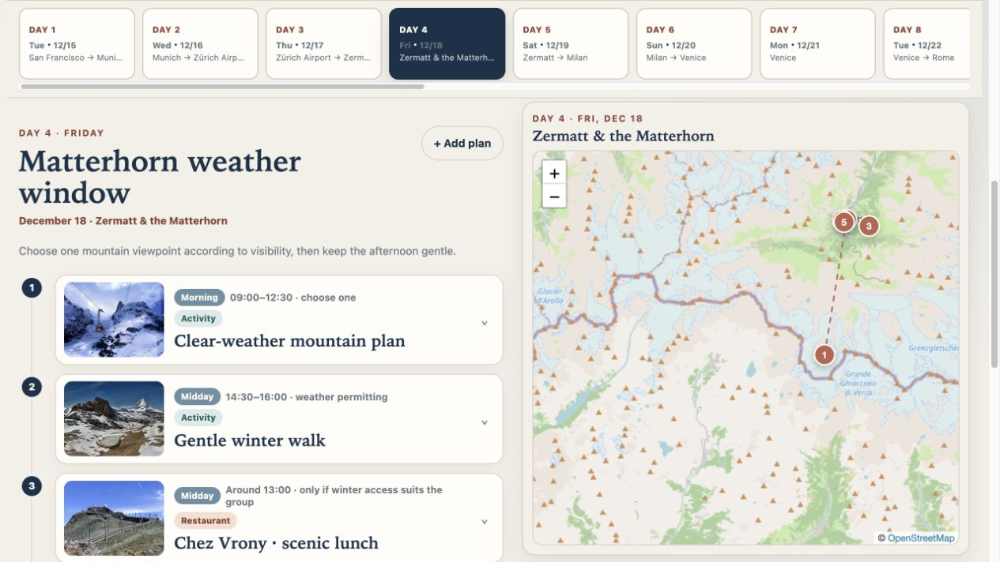
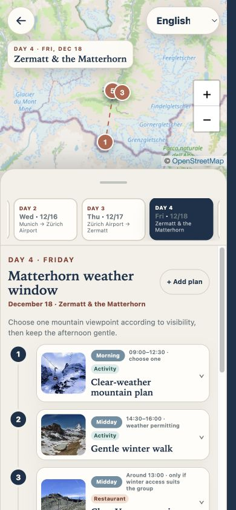
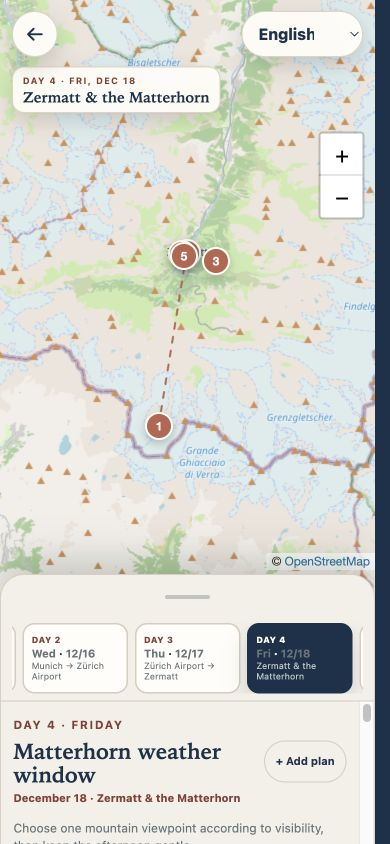

Designed around the journey
One itinerary.
Every screen.
A shared travel app that gives the map room to breathe, keeps the next stop close, and feels at home on your phone.
Fictional itinerary · local-only edits · no account setup
01 / Desktop workspace
A wider view of the day.
Explore the map without losing the itinerary. Every marker and plan belongs to the same ordered story.

A substantial, sticky map beside the selected day's timeline.
OrganizedOne day at a time. Flights, stays, food, and sights live together.
UnclutteredDetails when needed. Open a plan, a forecast, or nearby ideas.
ConnectedFrom plan to place. Follow a stop on the map or open its place link.
02 / Phone planner
More map.
More plan.
Your call.
Move the handle with a swipe to shift the balance. Dates stay in the panel, the itinerary scrolls naturally, and the map stays within reach.
Swipe, don't tap.
Three sheet positions. No accidental resizing.


Phone captures use a 390 × 844 responsive browser viewport. They demonstrate the layout, not a physical-iPhone installation test.
03 / From reference to your trip
Bring an itinerary.
Your agent builds the rest.
The reusable skill includes the application source, structured input contract, generator, tests, and deployment guide. Theme it for the next journey without rebuilding the interactions.
Read the agent workflowA showcase, not a shared trip link.
The screenshots retain approved trip branding and dates. The interactive sample is a separate fictional trip with local-only edits and no live synchronization. No production app URL or backend configuration is included. Capture context and verification notes →